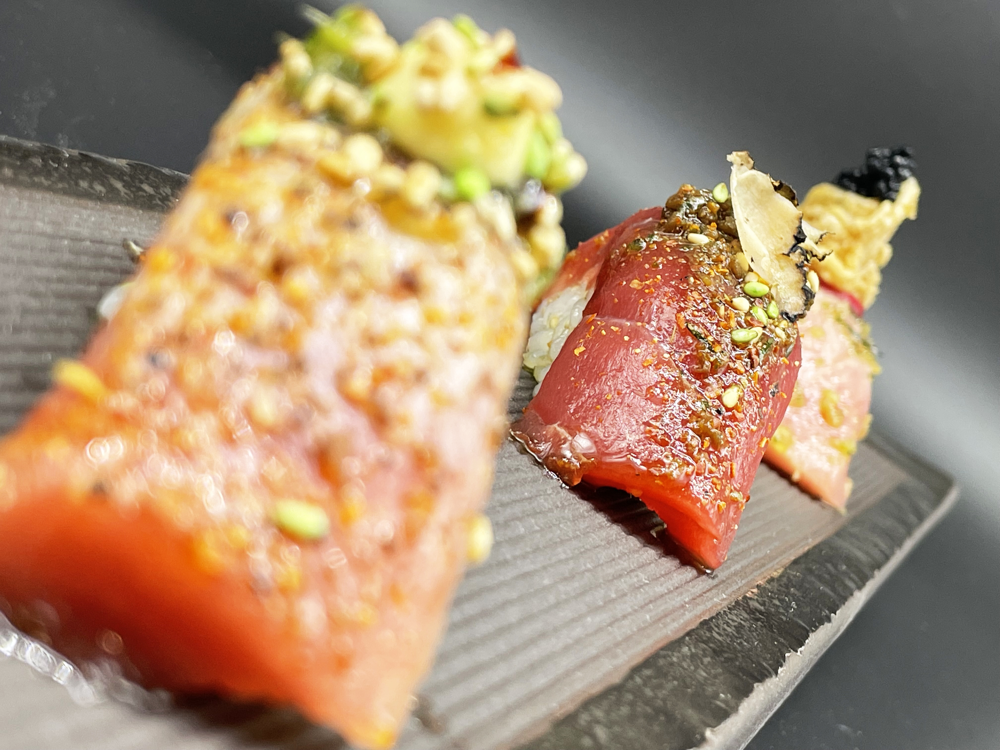
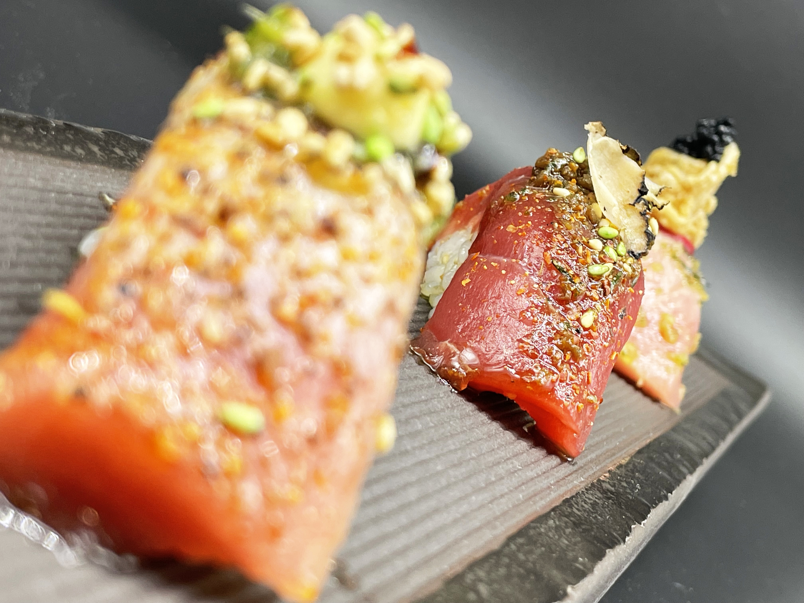
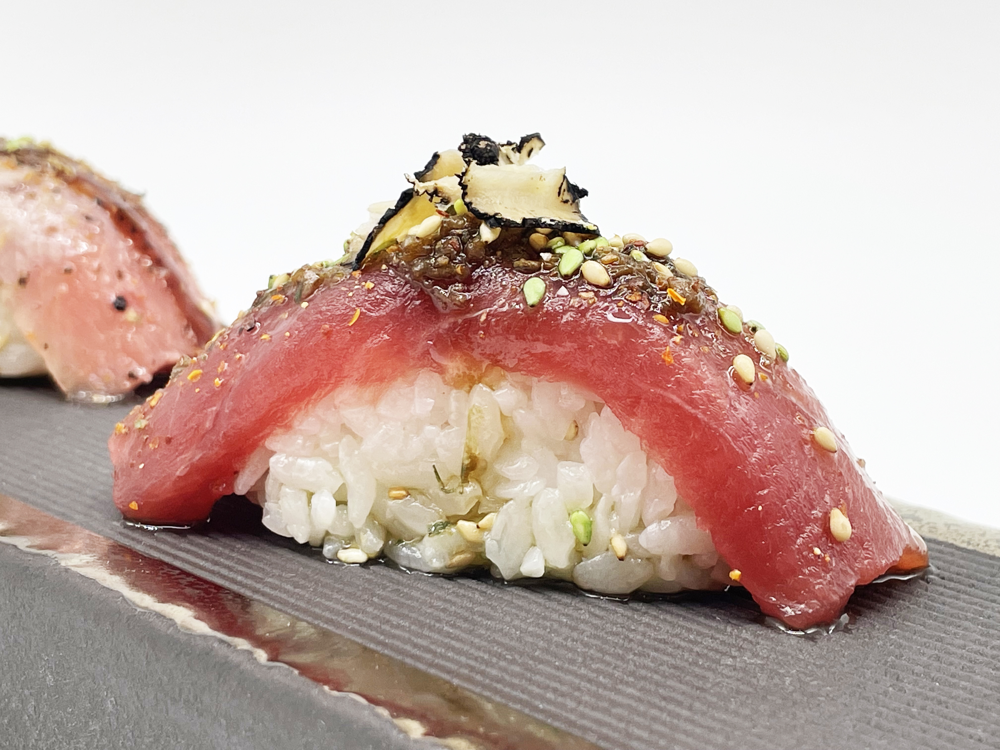
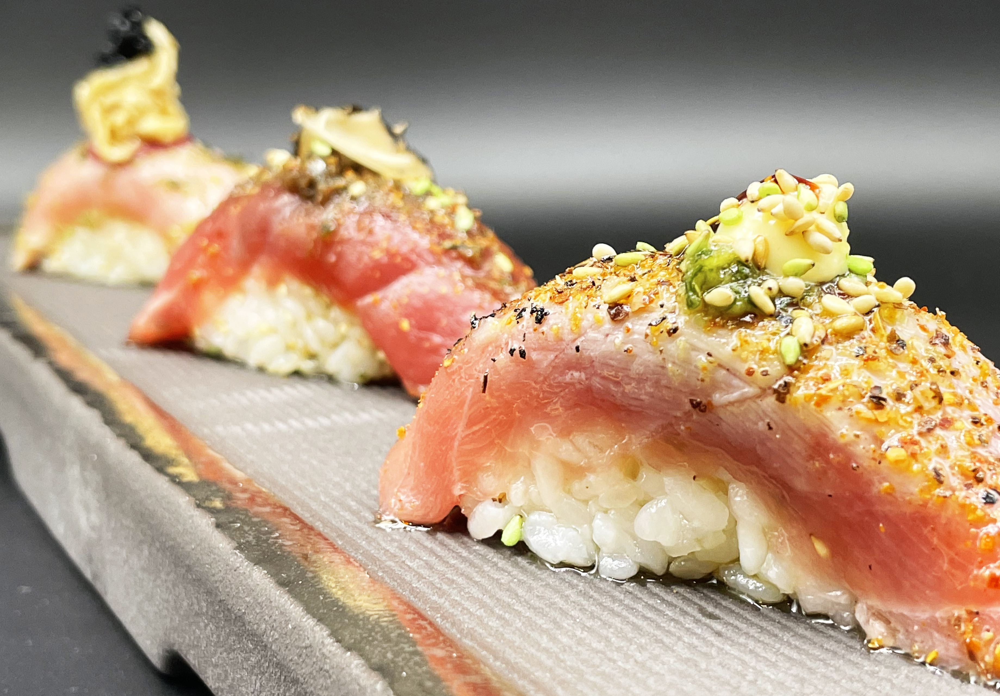
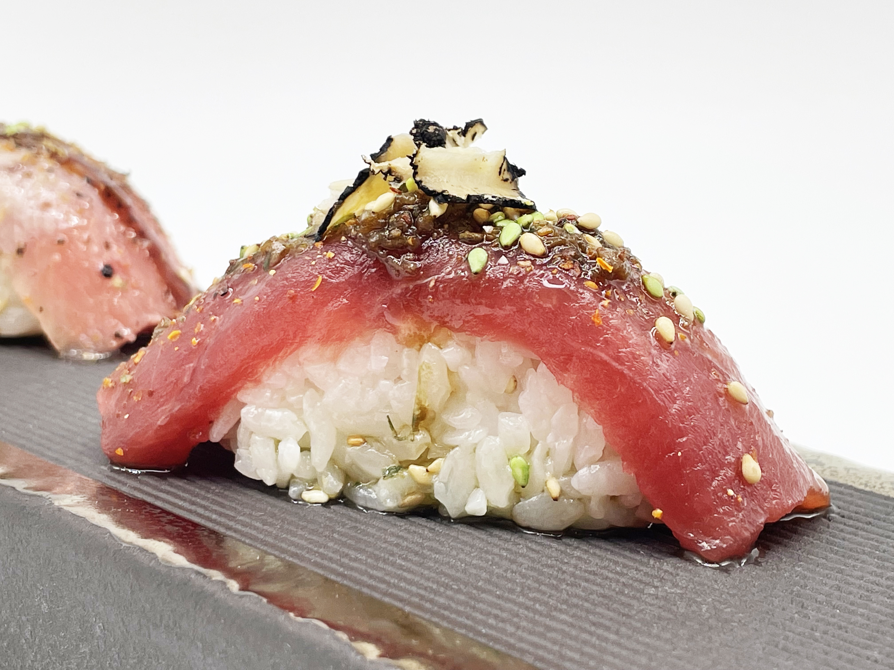
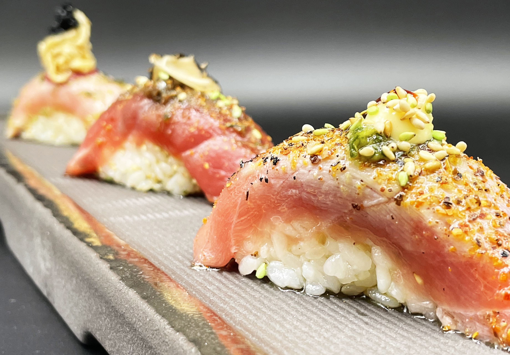
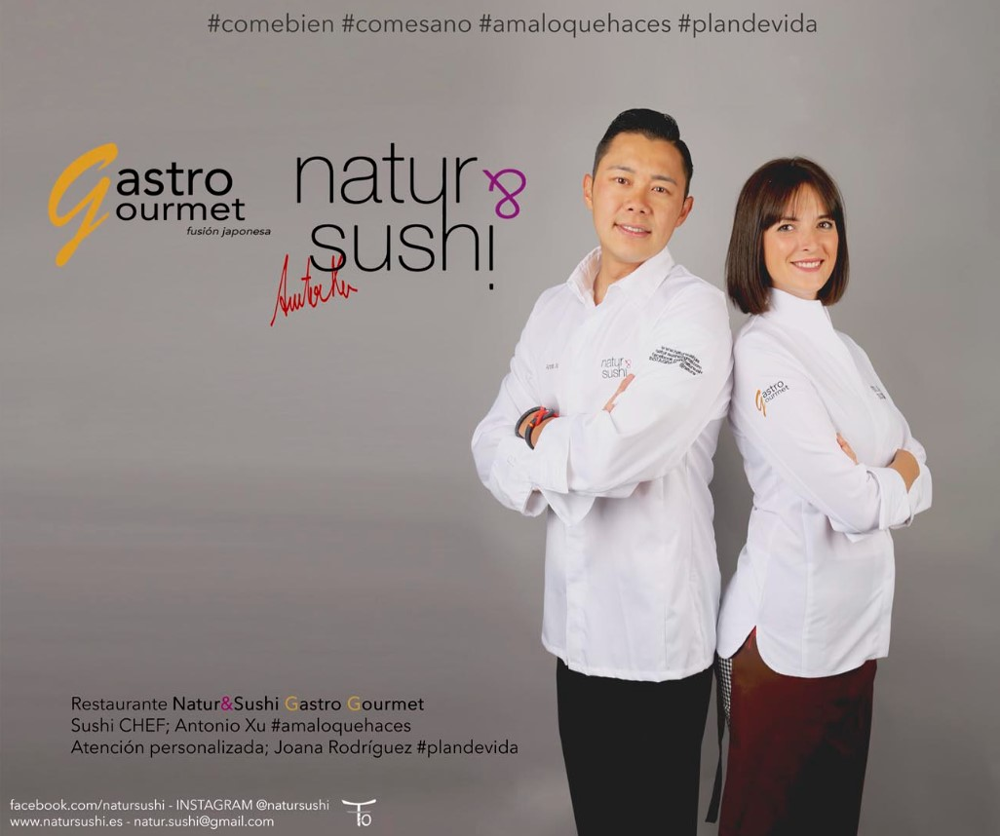

 



Abrimos:
Lunes, Miércoles y Jueves: cenas.
Viernes, Sábado y Domingo: comidas y cenas.
Martes: cerramos.
Disponemos de servicio a domicilio
Teléfono: 91 815 77 23 / 686 380 020
Natur&Sushi Gastro Gourmet, S.L.
B-883.66.99.2
Calle Lope de Vega número 2
Villanueva de la Cañada
28691 Madrid
Servicio SALA – Domicilio (Villanueva) – TakeAway
Conocenos
Natur&Sushi proporciona un servicio de sushi único, además dispone de una carta de cocina japonesa y creaciones personales fusión y exclusivas en este local. #AntonioXu, sushi chef, tiene como objetivo acercar ‘comida del mundo’ a este pueblo de la periferia de Madrid, Villanueva de la Cañada, además de la creación de nuevas recetas aptas para todos los públicos.
Una constante lucha para ofrecer al municipio nuevas tendencias culinarias, fomentando gastronomía y turismo, con la pequeña aportación que Natur&Sushi puede ofrecer en un ambiente relajado y familiar. Además con motivo del aniversario, prepara un plan trimestral con actividades gastronómicas para disfrute de los clientes más fieles, el programa recoge talleres, charlas, debates, demostraciones, eventos… queriendo ofrecer una llamada a la conciencia en la gastronomía.
#Joana, encargada del servicio en sala, trabaja en un equipo para hacer de Natur&Sushi una experiencia gastronómica familiar y agradable, en la que no sólo la comida, si no el trato del servicio de convierta en algo más que un servicio hostelero, cada día avanza un paso más consiguiendo que muchos clientes se sientan en casa.
Natur&Sushi nació de la mano de Hong Yan, con descendencia japonesa y oriental, los primeros platos originales le pertenecen, y siempre trabaja ahora de la mano de #AntonioXu para actualizar la carta en cada temporada. Nuestros productos son de importación japonesa, los pescados directos de las lonjas propias de Madrid, asegurando su calidad, y todo el género que se puede adquirir en el mismo pueblo, es comprado a diario, de tal forma que se promueve el negocio local y se garantiza la frescura diaria.
Los tanto los pescados como la carne y la mayoría de los alimentos, son congelados a -50ºC, durante un mínimo de 6/7 días, asegurando la ausencia de anisaki u otros males alimentarios. Se cuida el proceso de congelación, que sea lo más rápido posible y también se controla la descongelación, lo más lenta posible, para garantizar las mejores condiciones de los alimentos.
Desde Natur&Sushi, negocio familiar, trabajamos para que todos los comensales piensen en comer bien, comer sano, y sobre todo comer con conciencia.
#natursushi #gastrogourmet #comebien #comesan #amaloquehaces #plandevida #AntonioXu
